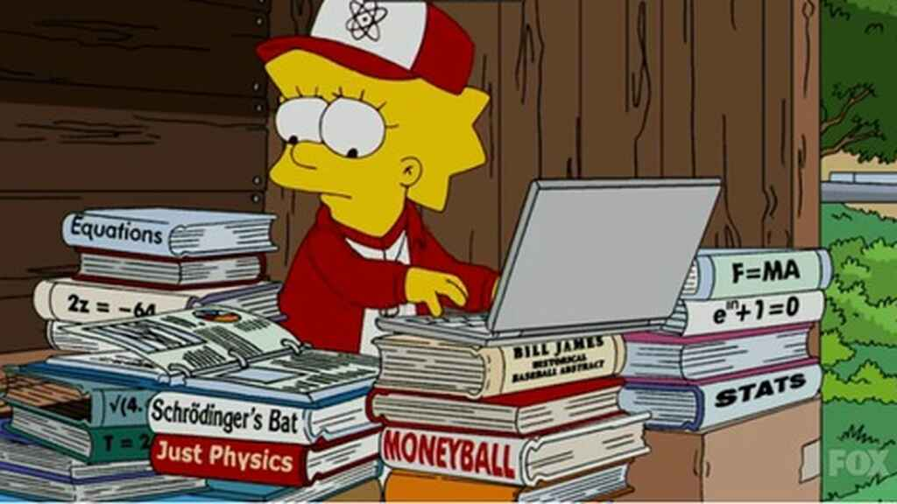

CAPITULO 6
LISA SIMPSON,REINA DE LAS MATES Y LOS BATES

Liza utilizo geometria que era parte de las matematicas para calcular la treyectoria ideal de minigolf.Le encontro una utilidad practica a la geometria.
Los gionistas matematicos tratan de explorar ideas matematicas mucho mas profundas.
W.I.E. Gates una vez dijo Siempre me ha perecido que las estadisticas son dificiles te tragar e imposible de digerir.
En el instituto le encantaba el calculo y era muy aficionado al beisbol.Entre los seguidores se encontaban matematicos e informaticos que no solo absorvian sus descubrimientos
si no desarrollaban sus conosimientos. Una de las cosas mas inportantes que hizo fue desarroyar una nueva estadistica conocida como el promedio en base mas slugging.
usaban las matematicaspara explorar el beisbol. Sin dinero, Beane se dio cuenta que la unica esperanza que tenia que ganar era confir en las estadisticas. Usaron los matematicas para burlarse de sus colegas mas ricos.
Todas las diciplinas metematicas necesitan un nombre.
antes la silosofia inclui conceptos matematicos.